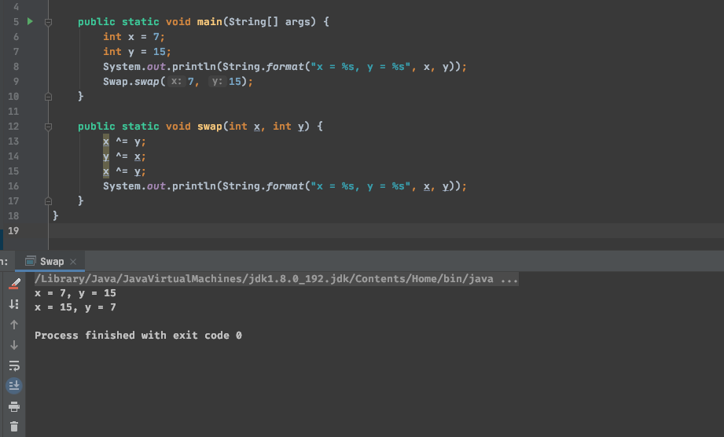

位运算技巧
1. 判断奇偶
if (x & 1 == 0) { // 7 ... 0111 & 1 == ... 0001
// 偶数
} else {
// 奇数
}
2. 高位清零、翻转
如想将一个数只保留最后四位。则让他与仅后四位为1的数字做与运算。 如下，留下来的就是x的后四位
x & 15 // x & ...0000 1111
那同样，将一个数后四位设为1就是用或运算。如下
x | 15 // x | ...0000 1111
那同样，翻转一个数的某几位就是用异或运算（相同为0，相异为1）。如下
x ^ 15 // x ^ ...0000 1111
针对情况与，还有个小技巧。如果想让一个数后几位清零。可以使用取反运算符。因为取反优先级更高。
x & ~15 // x & 1111... 1111 0000
3. 交换两个数
借用异或将两个数进行交换，是一个经典中的经典。如下
public void swap(int x, int y) {
x ^= y;
y ^= x;
x ^= y;
}

4. 位移说明
因为计算机用补码运算，所以正数无论是有符号、无符号位移结果都一致。
1. << x 左移
将一个数的二进制左移x位，末位用0填充。在移动的位数上1没有溢出到符号位之前，可以视为乘以2的x次方
但如果涉及到符号位变动或高位溢出，则不能视为乘法。如下结果为 -2147483648
1073741824 << 1 // 0100 0000... << 1
2. >> x 右移
将一个数的二进制右移x位，正数高位用0填充，负数用1填充。 正数没到0时可看作除以2的x次方
如下
-10 >> 2 // 1000 0000... 1010 >> 2
1000 0000... 1010 -> 1111 1111... 0101 -> 1111 1111... 0110 (原码到补码)
1111 1111... 1101 (右移2位) -> 1111 1111... 1100 -> 1000 0000... 0011 = -3
3. <<< x 无符号左移
逻辑同左移
4. >>> x 无符号右移
这里和右移有区别，无符号右移无论正负，高位都是拿0填充。
如下 -10经过无符号右移后变成了 1073741821
-10 >>> 2 // 1000 0000... 1010 >>> 2
1000 0000... 1010 -> 1111 1111... 0101 -> 1111 1111... 0110 (到补码)
0011 1111... 1101 -> 0011 1111...